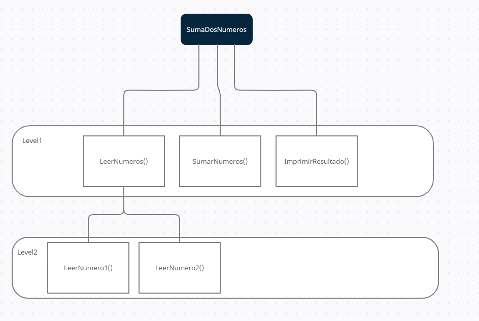

Consejos sobre como deben de ser la funciones para que sean faciles de leer y seguir.
Conceptos generales sobre funciones:
Las funciones deben de tener pocas lineas de código y se deben de ver a golpe de vista, si una función ocupa mas que el alto de pantalla probablemenete sea funcion debe de ser refactorizada y abstraer ciertas partes de su código en nuevas subfunciones.
El objetivo de una función debe de ser realizar solo una acción, está acción puedas estar compuesta de varios pasos, pero el objetivo final debe de ser uno solo, si la función hace varias tareas estás deberían de ser abstraidas en varias funciones.
Cada funcion debe de trabajar unícamente con un nivel de abstracción inferior, para ilustrar esto podemos ver el siguiente diagrama:
Cada fila en el diagrama es un nivel de abstracción, para llevar a cabo la funcionalidad de "sumar dos numeros" tenemos que realizar 3 pasos, primero leer los numeros, sumarlos e imprimirlos por pantalla.
Si en vez de poner LeerNumeros ponemos directamente LeerNumero1 y LeerNumero2 en el nivel superior la funcion estária trabajando con 2 niveles de abstracción, una manera facil de ver esto es que estás dos funciones pueden ser abstraidas en una nueva funcion, LeerNumeros en este caso.
NOTA: En ocasiones es dificil llegar a ver los niveles de abstracción, siempre es bueno pensar en varios niveles: alto, medio y bajo. En el nivel alto podríamos tener cosas muy abstractas (por ejemplo, crearUsuario()), y en el nivel mas bajo tendríamos cosas muy concretas (por ejemplo nombre="pepe").
Las funciones no deben de tener mas de 3 argumentos, y por norma general cuantos menos tengan mejor
Si una función tiene mas de 3 argumentos probablemente muchos de esos argumentos sean susceptibles de ser pasados como un objeto en si.
Si hay varias funciones dentro de una clase que comparten un argumento dicho argumento puede ser declarado como atributo de la clase para evitar que se tenga que pasar como argumento de la funcion.
Esto va en relación con que las funciones solo deben de hacer una cosa.
Si volvemos al ejemplo del diagrama anterior, en la funcion de SumarNumeros() no debería de contener a la funcion ImprimirResultado() ya que la funcion SumarNumeros() solo debe de realizar la suma y nada mas, si imprimiese ademas el resultado, este sería considerado un efecto colateral de la función, ya que no es su labor.
Si por ejemplo tenemos una funcion setName() la función solo debería de establecer el nombre, nada mas, y si por el contrario tenemos una funcion getName() solo debería de devolver un string, no debería de realizar ninguna modificación.
Si tenemos un código como:
if(setFlag(ready, true))
Es confuso ya que no es claro si estamos estableciendo un flag o si está preguntando si un flag está establecido
Siempre que una función tenga un comportamiento no esperado es preferible lanzar una excepción en vez de devolver un código de error.
Cuando se produce un error debemos de controlarlo, por lo tanto esto implica la implementación de estructuras if para manejar el posible error que se pueda devolver, si utilizamos excepciones podemos separar el manejo de la excepción del código "happy path", lo cual nos permite escribir un código más simple
Segun Dijkstra las funciones solo deben de tener un único punto de salida, pero esto fue escrito en relación a la programación estructural, y para funciones largas.
Si mantenemos nuestras funciones pequeñas podemos tener varios returns dentro de una función, ya que no hacen que la función sea caótica e incluso en algunos casos pueden ayudar a leer mejor la estructura de la función.
Clean Code | Funciones